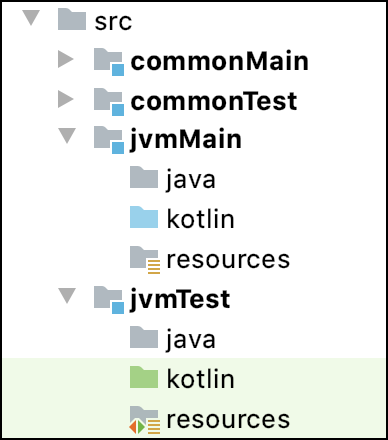

type: doc layout: reference
title: "配置编译项"
配置编译项
Kotlin multiplatform projects use compilations for producing artifacts. Each target can have one or more compilations, for example, for production and test purposes.
For each target, default compilations include:
mainandtestcompilations for JVM, JS, and Native targets.- A compilation per Android build variant, for Android targets.
If you need to compile something other than production code and unit tests, for example, integration or performance tests, you can create a custom compilation.
You can configure how artifacts are produced in:
See the list of compilation parameters and compiler options available for all or specific targets.
配置所有编译项
kotlin {
targets.all {
compilations.all {
kotlinOptions {
allWarningsAsErrors = true
}
}
}
}
为一个目标配置编译项
Groovy DSL
kotlin {
jvm().compilations.all {
kotlinOptions {
sourceMap = true
metaInfo = true
}
}
}
Kotlin DSL
kotlin {
targets.jvm.compilations.all {
kotlinOptions {
sourceMap = true
metaInfo = true
}
}
}
配置一个编译项
Groovy DSL
kotlin {
jvm().compilations.main {
kotlinOptions {
jvmTarget = "1.8"
}
}
}
Kotlin DSL
kotlin {
jvm {
val main by compilations.getting {
kotlinOptions {
jvmTarget = "1.8"
}
}
}
}
创建自定义编译项
If you need to compile something other than production code and unit tests, for example, integration or performance tests, create a custom compilation.
For example, to create a custom compilation for integration tests of the jvm() target, add a new item to the compilations
collection.
For custom compilations, you need to set up all dependencies manually. The default source set of a custom compilation does not depend on the
commonMainand thecommonTestsource sets. {:.note}Groovy DSL
kotlin {
jvm() {
compilations.create('integrationTest') {
defaultSourceSet {
dependencies {
def main = compilations.main
// Compile against the main compilation's compile classpath and outputs:
implementation(main.compileDependencyFiles + main.output.classesDirs)
implementation kotlin('test-junit')
/* ... */
}
}
// Create a test task to run the tests produced by this compilation:
tasks.register('jvmIntegrationTest', Test) {
// Run the tests with the classpath containing the compile dependencies (including 'main'),
// runtime dependencies, and the outputs of this compilation:
classpath = compileDependencyFiles + runtimeDependencyFiles + output.allOutputs
// Run only the tests from this compilation's outputs:
testClassesDirs = output.classesDirs
}
}
}
}
Kotlin DSL
kotlin {
jvm() {
compilations {
val main by getting
val integrationTest by compilations.creating {
defaultSourceSet {
dependencies {
// Compile against the main compilation's compile classpath and outputs:
implementation(main.compileDependencyFiles + main.output.classesDirs)
implementation(kotlin("test-junit"))
/* ... */
}
}
// Create a test task to run the tests produced by this compilation:
tasks.register<Test>("integrationTest") {
// Run the tests with the classpath containing the compile dependencies (including 'main'),
// runtime dependencies, and the outputs of this compilation:
classpath = compileDependencyFiles + runtimeDependencyFiles + output.allOutputs
// Run only the tests from this compilation's outputs:
testClassesDirs = output.classesDirs
}
}
}
}
}
You also need to create a custom compilation in other cases, for example, if you want to combine compilations for different JVM versions in your final artifact, or you have already set up source sets in Gradle and want to migrate to a multiplatform project.
Include Java sources in JVM compilations
By default, the JVM target ignores Java sources and compiles only Kotlin source files.
To include Java sources in the compilations of the JVM target, explicitly enable the Java language support for the target:
When creating a project with the Project Wizard.
In the build script of an existing project.
kotlin {
jvm {
withJava()
}
}
This applies the Gradle java plugin and configures the target to cooperate with it.
The Java source files are placed in the child directories of the Kotlin source roots. For example, the paths are:

The common source sets cannot include Java sources.
Due to current limitations, the Kotlin plugin replaces some tasks configured by the Java plugin:
- The target's JAR task instead of
jar(for example,jvmJar). - The target's test task instead of
test(for example,jvmTest). - The resources are processed by the equivalent tasks of the compilations instead of
*ProcessResourcestasks.
The publication of this target is handled by the Kotlin plugin and doesn't require steps that are specific for the Java plugin.
配置与原生语言的互操作
Kotlin provides interoperability with native languages and DSL to configure this for a specific compilation.
| Native language | Supported platforms | Comments |
|---|---|---|
| C | All platforms, except for WebAssembly | |
| Objective-C | Apple platforms (macOS, iOS, watchOS, tvOS) | |
| Swift via Objective-C | Apple platforms (macOS, iOS, watchOS, tvOS) | Kotlin can use only Swift declarations marked with the @objc attribute. |
A compilation can interact with several native libraries. Configure interoperability in the cinterops block of the
compilation with available parameters.
Groovy DSL
kotlin {
linuxX64 { // Replace with a target you need.
compilations.main {
cinterops {
myInterop {
// Def-file describing the native API.
// The default path is src/nativeInterop/cinterop/<interop-name>.def
defFile project.file("def-file.def")
// Package to place the Kotlin API generated.
packageName 'org.sample'
// Options to be passed to compiler by cinterop tool.
compilerOpts '-Ipath/to/headers'
// Directories for header search (an eqivalent of the -I<path> compiler option).
includeDirs.allHeaders("path1", "path2")
// Additional directories to search headers listed in the 'headerFilter' def-file option.
// -headerFilterAdditionalSearchPrefix command line option equivalent.
includeDirs.headerFilterOnly("path1", "path2")
// A shortcut for includeDirs.allHeaders.
includeDirs("include/directory", "another/directory")
}
anotherInterop { /* ... */ }
}
}
}
}
Kotlin DSL
kotlin {
linuxX64 { // Replace with a target you need.
compilations.getByName("main") {
val myInterop by cinterops.creating {
// Def-file describing the native API.
// The default path is src/nativeInterop/cinterop/<interop-name>.def
defFile(project.file("def-file.def"))
// Package to place the Kotlin API generated.
packageName("org.sample")
// Options to be passed to compiler by cinterop tool.
compilerOpts("-Ipath/to/headers")
// Directories to look for headers.
includeDirs.apply {
// Directories for header search (an equivalent of the -I<path> compiler option).
allHeaders("path1", "path2")
// Additional directories to search headers listed in the 'headerFilter' def-file option.
// -headerFilterAdditionalSearchPrefix command line option equivalent.
headerFilterOnly("path1", "path2")
}
// A shortcut for includeDirs.allHeaders.
includeDirs("include/directory", "another/directory")
}
val anotherInterop by cinterops.creating { /* ... */ }
}
}
}
Android 编译项
The compilations created for an Android target by default are tied to Android build variants: for each build variant, a Kotlin compilation is created under the same name.
Then, for each Android source set compiled for
each of the variants, a Kotlin source set is created under that source set name prepended by the target name, like the
Kotlin source set androidDebug for an Android source set debug and the Kotlin target named android. These Kotlin
source sets are added to the variants’ compilations accordingly.
The default source set commonMain is added to each production (application or library) variant's compilation.
The commonTest source set is similarly added to the compilations of unit test and instrumented test variants.
Annotation processing with kapt is also supported, but due to current limitations it requires that the Android target
is created before the kapt dependencies are configured, which needs to be done in a top-level dependencies block rather
than within Kotlin source set dependencies.
kotlin {
android { /* ... */ }
}
dependencies {
kapt("com.my.annotation:processor:1.0.0")
}
源集层次结构的编译项
Kotlin can build a source set hierarchy with the dependsOn relation.
If the source set jvmMain depends on a source set commonMain then:
- Whenever
jvmMainis compiled for a certain target,commonMaintakes part in that compilation as well and is also compiled into the same target binary form, such as JVM class files. - Sources of
jvmMain'see' the declarations ofcommonMain, including internal declarations, and also see the dependencies ofcommonMain, even those specified asimplementationdependencies. jvmMaincan contain platform-specific implementations for the expected declarations ofcommonMain.- The resources of
commonMainare always processed and copied along with the resources ofjvmMain. - The language settings of
jvmMainandcommonMainshould be consistent.
Language settings are checked for consistency in the following ways:
jvmMainshould set alanguageVersionthat is greater than or equal to that ofcommonMain.jvmMainshould enable all unstable language features thatcommonMainenables (there's no such requirement for bugfix features).jvmMainshould use all experimental annotations thatcommonMainuses.apiVersion, bugfix language features, andprogressiveModecan be set arbitrarily.